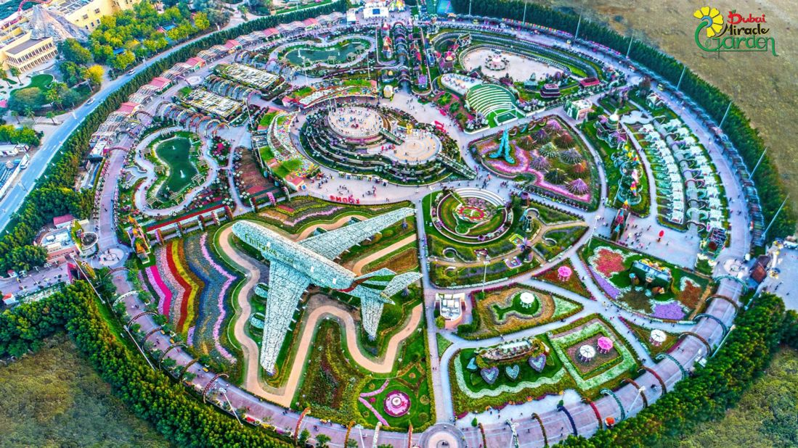

Welcome To My Website!
Welcome to my website, here you will find the top 10 attractions and foods in Dubai.
- Burj Khalifa
The Burj Khalifa soars to an astounding height of 828 meters, making it the world's tallest man-made structure. Visiting its observation decks offers an opportunity to touch the sky and see breathtaking panoramic views of Dubai's ever-evolving skyline. This is the best attraction in Dubai as it is a worldwide icon, and is the city's greatest pride.

- Burj Al Arab
The Burj Al Arab is a luxorious hotel that is located in the Palm Jumeirah. It looks as if it floats on the ocean and is shaped like a half moon. Elegant interiors blend luxury with Arabian tradition, and the service is world-class. Enjoy a range of fine dining experiences, including the underwater Al Mahara restaurant, and indulge in afternoon tea at the SkyView Bar.
- Shawarma
Shawarma, the icon of street food worldwide, is a culinary delight that is perfected in Dubai. This Middle Eastern snack begins with thinly sliced, marinated meat, traditionally lamb, chicken, or beef, revolving on a vertical grill, slowly cooking to perfection. As it roasts, the savory juices drip, infusing the meat with mouthwatering goodness. The meat is then wrapped up with fresh vegetables, like crisp lettuce, juicy tomatoes, and crunchy cucumbers, are combined with zesty condiments such as tahini, garlic sauce, or spicy harissa.
- Dubai Mall
In the heart of Dubai, the Dubai Mall stands as a beacon of luxury and enjoyment. Spanning over 13 million square feet, this mega-mall is a shopping centre like no other, offering a retail experience that serves every desire and taste. As you wander through its corridors, you'll discover a dazzling array of international brands, high-end boutiques, local treasures, a massive aquarium wall with a shark in it, a huge waterfall, alongside an impressive collection of dining options that range from gourmet restaurants to street food stalls.
- Miracle Garden
The Dubai Miracle Garden is an extraordinary horticultural spectacle that unfolds in the heart of the desert. Spanning over 72,000 square meters, it is a vibrant garden of over 150 million flowers beautifully arranged into intricate designs, sculptures, and living structures, transforming the landscape into a floral wonderland. Everything is made out of flowers, making it a must visit for nature enthusiasts.

- Arabian Desert Safari
An Arabian Desert Safari in Dubai is a thrilling and enchanting adventure that whisks you away from the bustling city into the heart of the mesmerizing desert landscape. As the sun sets over the endless dunes, you'll embark on a journey filled with exhilarating dune bashing, where expert drivers navigate the sandy peaks and troughs, leaving you breathless with excitement. The desert safari also offers a chance to meet and interact with the majestic camels, experience the magic of sandboarding, and revel in the tranquility of the desert under a starlit sky.
- Palm Jumeirah
The Palm Jumeirah in Dubai is a man-made marvel of innovation and luxury, renowned worldwide as one of the most iconic and exclusive destinations. Shaped like a colossal palm tree, it extends into the azure waters of the Persian Gulf, with its fronds adorned by upscale residences, luxury resorts, and stunning beachfront properties. The Palm Jumeirah is a testament to human engineering, offering a lifestyle that seamlessly merges modern extravagance with the natural beauty of the ocean. This palm-shaped island paradise beckons with pristine beaches, lavish shopping, and a vibrant nightlife, offering an unparalleled blend of opulence, leisure, and breathtaking views of the Dubai skyline, making it a symbol of the city's audacious ambition and relentless pursuit of the extraordinary.
- Luqaimat
Dubai's treat, Luqaimat, is a delectable and irresistible traditional dessert that captures the essence of Middle Eastern sweetness. These golden, bite-sized dumplings are fried to perfection, resulting in a delightful crispy exterior that contrasts with their wonderfully soft and fluffy interior. But the real magic happens when they're generously drizzled with fragrant date syrup and often sprinkled with sesame seeds or aromatic saffron. Luqaimat strikes a harmonious balance between sweet and slightly savory, making it an absolute treat for the taste buds, while its captivating combination of textures and flavors embodies the rich culinary heritage of the region, offering a delightful and unforgettable taste of Arabian indulgence.
- The Dubai Fountain
The Dubai Fountain is a mesmerizing aquatic spectacle and an iconic part of the city's skyline, captivating visitors with its daily displays of water, music, and light. Situated in the heart of downtown Dubai, at the base of the Burj Khalifa, the world's tallest building, this choreographed water feature spans over 900 feet and boasts thousands of brilliantly illuminated water jets. As night falls, the Dubai Fountain comes to life, gracefully dancing to an array of musical genres, from classical to contemporary hits, creating a symphony of lights and liquid that dances in perfect harmony. Its breathtaking shows, often accompanied by the world's tallest building's dramatic LED displays, make the Dubai Fountain a must-see attraction, embodying the city's commitment to architectural innovation, artistic expression, and sensory wonder.
- Ferrari World
Ferrari World, located on Yas Island in Abu Dhabi, is a high-octane paradise for thrill-seekers and automotive enthusiasts alike. This mammoth indoor theme park is a dazzling tribute to the iconic Ferrari brand, and it's a place where speed and excitement reign supreme. With its colossal red roof inspired by the curves of a Ferrari GT, it's an architectural masterpiece in itself. Inside, you'll find a thrilling array of rides and attractions, including the world's fastest roller coaster, Formula Rossa, which propels you to hair-raising speeds. Ferrari World is not just for adrenaline junkies, though – it also offers a glimpse into the rich history of Ferrari, with a museum showcasing vintage cars, interactive exhibits, and a chance to witness the precision and artistry that go into crafting these incredible vehicles. It's a captivating blend of engineering marvels, exhilarating experiences, and a deep dive into the world of Ferrari, making it an unforgettable destination for visitors of all ages.